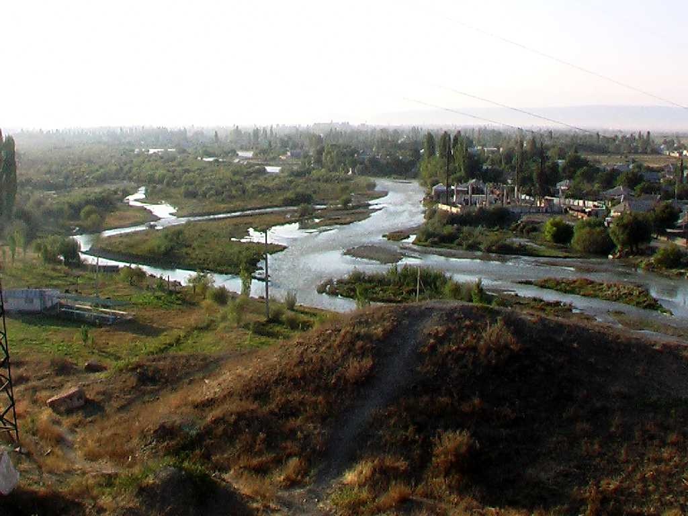
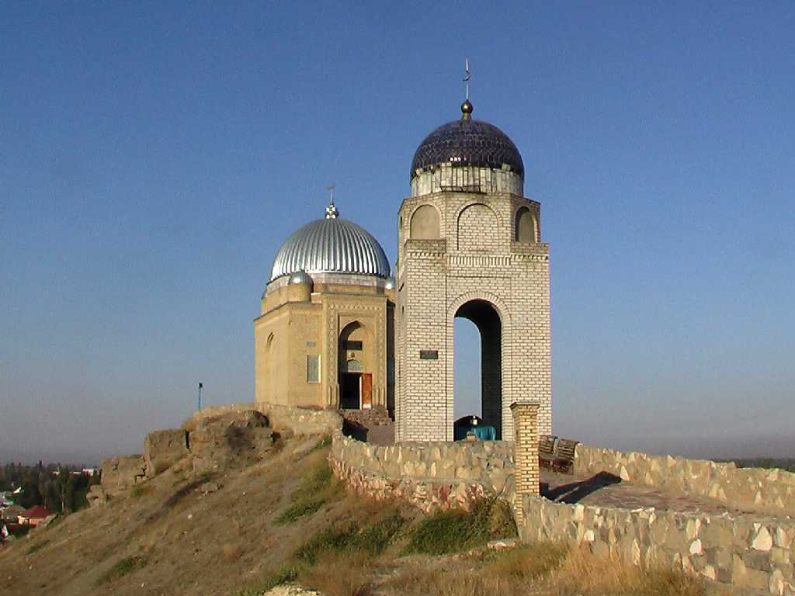
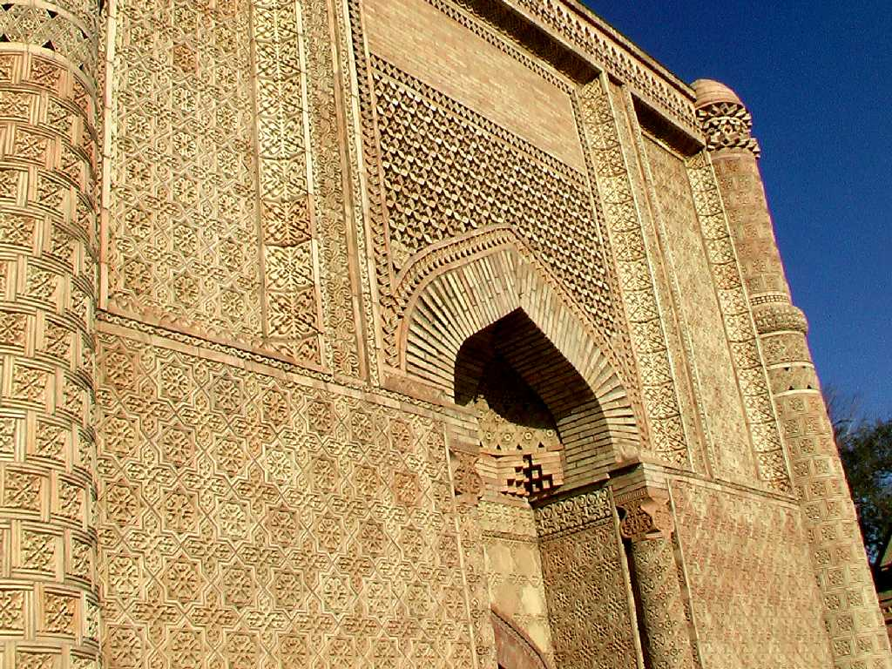
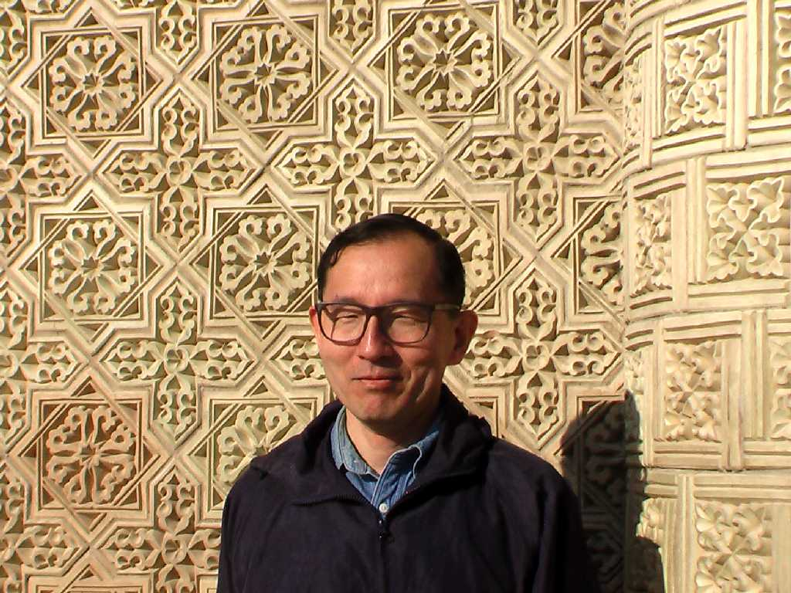

Taraz River Taraz
７５１年東進するアッバース朝と西進する唐が戦った古戦場でアッバース朝の勝利により中央アジアがイスラム化したと云われている

Tekturmas Mausoleum Taraz
中央アジア様式とロシア様式が融合した美しい霊廟

Aisha Bibi mausoleum
純愛物語が伝えられている１１世紀カラハン朝の廟で５０種のレンガ模様が美しい

September 22 2008 Aisha Bibi mausoleum